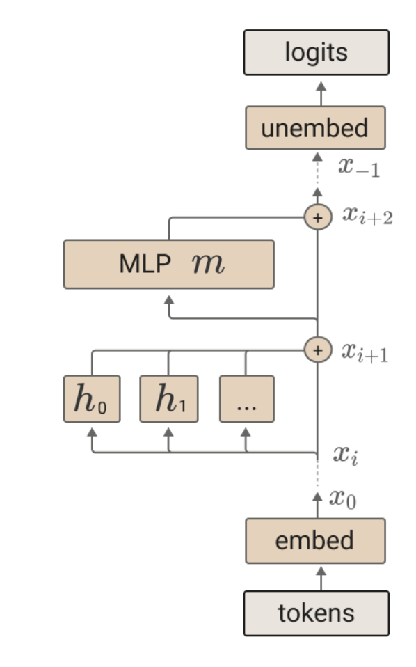

Introduction
Modern AI systems such as Stable Diffusion and ChatGPT demonstrate remarkable and often surprising capabilities. Yet, their inner workings remain largely opaque. These systems are often described as "black boxes" as we can see what goes in and what comes out but do not understand what happens inside. This opacity raises a number of concerns.
First, there's the issue of fairness. Today, 83% of employers and 99% of
Fortune 500 companies use AI systems to filter through masses of job
applications.
A second concern is reliability. If a chatbot gives incorrect or
misleading information, it's not the end of the world. But when AI is
entrusted with more responsibility such as guiding autonomous
vehicles
A third concern is security. One of the most pressing threats to today's
systems is the risk of jailbreaks.
In short, the non-transparency of these systems makes it harder to trust their decisions. In response, the field of interpretability has emerged, aiming to demystify these systems and provide insight into their internal mechanisms.
If you're unfamiliar with how AI systems are created, this opaqueness may seem odd; after all, humans built these systems. Shouldn't we understand how they work? Unfortunately, not. You may have heard the word "learning" tossed around in discussions of AI. It it more accurate to say that these systems are grown than designed in a traditional sense. Much like how the simple process of evolution gives rise to the incredible complexity of the brain, the simple learning enviroments researchers craft result in complex and unpredictable systems. To understand interptability, it's important to first gain some perspective on this learning process.
A little history
Despite its recent flood of attention, AI was dismissed as an unserious field for much of its existence. Since the advent of computers in the 1950s, ambitious programmers promsied we were on the cusp of building systems smarter than us. But time and time again, those promises fell flat.
The core challenge of AI is the rigidity of computers. Computer chips themselves can only perform a handful of simple operations: things like adding numbers, comparing values, and moving data between memory locations. Programs are constructed by chaining together millions—sometimes billions—of these atomic operations. But for a program to function correctly, every step must be painstakingly spelled out. The programmer has to antipcate every possible case and define, in exact terms, what the system should do in each one.
From this perspective, the dream of artificial intelligence feels almost absurd. Intelligence, after all, is messy—it's intuitive, context-dependent, and often based on experience rather than explicit rules. We make decisions based on gut feelings, interpret language filled with ambiguity, and adapt to new situations without being told exactly what to do. How could a system so rigid, so mechanical, ever give rise to the complexitity and nuance of human thought?
You can probably see where this story is going. Obviously, some form of
"machine learning" (ML) is the answer right? Well—not so much. At the
time, scientists had no real understanding of how learning worked in the
brain,
Still, there was some early optimism that it could be done. In 1957,
Frank Rosenblatt unveiled the perceptron, a simple model very
rougly analogus to neurons in the brain. Rosenblatt demonstrated how his
machine could differntiate basic shapes on a grid, such as "T"s from
"J"s if configured properly. Additionally, Rosenblatt proposed a simple
learning rule that allowed his model to learn some behavior on its own
through a handful of examples. Initially, Rossenblatt's work was met
with excitement with The New York Times proclaiming that
Rosenblatt's perceptron would be able to "walk, talk, see, write,
reproduce itself, and be conscious of its existence".
As such, the field of AI entered a long period of stagnation. The
initial excitement around learning systems faded, and interest shifted
back to rule-based approaches. In 1960, the field came tantalizingly
close to a breakthrough. Bernard Widrow and Marcian Hoff introduced the
Least Mean Squares (LMS) algorithm which was remarkably close to the
modern method. But the pair stopped just short of applying their method
for networks of perceptrons.
The field of AI would have to wait until 1986 for this long-sought
general learning rule.
All of that changed in 2012. An ML system AlexNet
It's hard to overstate what a watershed moment AlexNet was for AI. Once dismissed as unreliable, backpropagation had become not just accepted, but revered—almost mythologized. What kind of fantastical algorithms had it found that beat the competition so badly? What did backpropagation know that we didn't? These quesitons spurred the dawn of interptability efforts. Alternate genesis. Not born from pragmatic worries but scientific curiosity.
Just as building AI systems once seemed impossible, interpreting them
seemed equally daunting. Instead of a human-understable programs like
this:

After numerous failed attempts to understand models like AlexNet, the
first interptability successes came in 2020 with the launch of the
Distill Circuits thread.
Yet while interptability researchers struggled to understand AlexNet, AI researchers raced to create more and more complicated systems. Notably, OpenAI's ChatGPT models garnared a huge ammount of attention from the general public, spurring an avalanche of investment toward even more powerful systems.
As a result, much of the field's focus shifted toward these new language
models. These models presented their own unique challenges for
interpertability. To address these challenges, Anthropic launched the
Transformer Circuits Thread
While the large-scale deployment of language models has motivated serious efforts to understand them, other modalities such as music remain understudied. The goal of this paper is to apply these established interptability techniques to this new domain.
A Brief Introduction to ML
To make this paper as self-contained as possible, I've included a brief introduction to machine learning. If you're already familiar with the basics, feel free to skip this section. The only prior knowledge assumed here is comfort with basic algebraic expressions and fundamental math concepts like functions and vectors. In this section, we'll walk through 3 ML probelms:
- Predicting house prices based on square footage
- Recognizing handwritten digits
- Building a chatbot that can answer user querries
Housing Model
The first step in tackling any machine learning problem is gathering
data. In this case, we'll use the Ames Housing Dataset, which
contains information on 2,930 homes in Ames, Iowa.
In ML, we almost always manually design the structure of our
model.
Hmmm. Let's see if we can get better results with a different type of model. Why don't we try a quadratic model: $price = (a)(area)^2 + (b)(area) + c$.
This quadratic model seems to fit the data a bit better. But how can we
quantify this? To evaluate how well our model explains the data, we use
a loss function. For our housing price prediction, the
Mean Squared Error (MSE) is particularly appropriate.
The ultimate goal of machine learning is to choose parameters that minimize this loss function. Let's explore some several approaches to finding these optimal parameters.
Global Search
A naïve approach is to conduct a comprehensive search across the entire parameter space. One way to do this is a grid search in which we check every parameter combination in a grid. For example, we may choose to evaluate m between 0 and 500 and b between 0 and 800000 with a 5x5 grid. The coarseness of the grid determines how finely we divide each dimension—a finer grid (e.g., 100x100) gives better results but requires more computation (10,000 evaluations instead of just 25). Another approach is random search in which we randomly sample points from the parameter space, with the number of samples determining how thoroughly we explore. Probabilistically, as we increase the number of samples, we become more likely to find points near the optimum, though with diminishing returns—doubling the number of samples doesn't double our chances of finding the global optimum. Look at the example below to see both these methods in action.
As you can see, these global search methods work quite well for our simple housing problem. However, this approach doesn't scale well for more complicated models. A grid search in which we check 10 values for each parameter is feasible when there is only two parameters (simply 10^2 operations) but would be impossible for a model with 175 billion parameters like the original ChatGPT (10^175,000,000,000) - a number vastly larger than the estimated 10^80 atoms in the observable universe.
Random search suffers from similar diminishing returns: in high-dimensional spaces, the probability of randomly sampling near the optimal region becomes vanishingly small. Mathematically, if the optimal region occupies a fraction f of each dimension's range, then in n dimensions, the probability of a random point falling in the optimal region is f^n. For example, if the optimal region is 10% of each dimension's range, in just 30 dimensions the probability drops to 10^-30 - effectively zero.
This "curse of dimensionality" presents a fundamental challenge: as dimensions increase, the volume of the parameter space grows exponentially. Instead of globally searching for parameter values, we need a way to instead gradually improve our model. We need our model to learn.
Local Search
With local search, we seek to make incremental progress. We start by randomly choosing parameter values. From there, we sprinkle points in a radius around our current parameter values and choose the one with the lowest loss. Repeating this process many times eventually leads to a pretty good set of parameters. Check out this animation below.
This method is a far more efficient than global search methods as we explore only a tiny slice of parameter space. However, local search faces a new challenge: local minima. If there is a significant valley in the loss landscape, local search may take a step out and then a step back in getting stuck in an infinite loop. Additionally, local search still isn't free from the curse of dimensionality. As the number of dimensions increases, the volume of the "neighborhood" around our current point grows exponentially.
It seems like we need some miracle tool that allows us to determine where to travel without computing all the points around us. Enter gradients. Our trusty compass for navigating these high-dimensional parameter spaces.
Gradient Descent
First off, what even is a gradient? Gradients are the higher-dimensional
cousins of the derivative. In calculus, derivatives measure the
"instantaneous rate of change" of a function around a point.
A classic example involves the motion of a car. If the car is at mile marker 10 at noon and mile marker 40 at 1 PM, its average speed over that hour is 30 miles per hour. But what if you're interested in how fast the car is going at exactly 12:30 PM?
This is where the concept of an instantaneous rate of change becomes essential. Instead of calculating average speed over a large interval, we consider smaller and smaller intervals around 12:30 PM. As the time interval shrinks, the average rate of change approaches the instantaneous rate—this is what the derivative captures. In this instance, the derivative acts as a sort of mathematical speedometer.
So how do we actually compute derivatives? Well, there's no silver bullet. Mathematicians have worked out the derivatives of a bunch of common functions. For example, the derivative of $x^2$ works out to be $2x$ and the derivative of $sin(x)$ works out to be $cos(x)$. To work out the derivative of more complicated functions such as $sin(x^2)+5x$, we simply combine these basic results together using a couple of basic rules such as the sum rule, product rule, and chain rule. The specific computational rules aren't important so I'll leave them out.
Getting back to gradients, what should a derivative mean in higher dimensions? When a function depends on more than one variables, we can no longer talk about a single rate of change. Instead, we look at how the function changes as we vary each input independently. These are called partial derivatives. The gradient simply brings these partial derivatives together into a vector. As it turns out, this gradient vector always points in the direction of steepest ascent (this should make sense as steeper axes have a larger component).
In computing the gradient vector, we don't need to compute each partial derivative independently as that leads to a ton of repeated computation. Instead, we can employ the aforementioned backpropagation algorithm. Backpropegation works by first computing running the model (whats called a forward pass) and then working backwards to find each partial derivative (the backward pass). Armed with the gradient vector, we've finally triumphed over the curse of dimensionality as computation grows linearly rather than exponentially with respect to the number of parameters.
The process of gradient descent is very similar to local search. We start with a random choice of parameters. Then, we calculate the gradient vector of the loss function with respect to our parameters. Next, we simply travel in the opposite direction of this vector with some scaling factor, often called the learning rate. Again, this method is fallible to failling into local minima, but is much more efficient than the previously discussed methods. Look at the animation below to see how this gradient descent process works.
There are a couple of improvements we can make to this method. For one, instead of calculating the exact loss with respect to all of our datapoints, it makes sense to calculate the loss for a small batch of our data. This approximates the gradient pretty well and the small ammount of error may actually be helpful in escaping local minima. These methods that calculate the loss for a batch are called stochastic gradient descent.
Another optimization of gradient descent is adding a momentum term. This helps the model push faster into directions where its seeing big gains and smooth out wobbly trajectories. There are a couple different implementations of momentum, but the modern king is AdamW which also dynamically adjusts the learning rate for different parameters.
And that's the state of the art for optimizing parameters. All of ML simply ammounts to optimizing much larger systems. So let's move on to a real problem: recognizing handwritten digits.
Digit Recognition
As with the last problem, we'll start by choosing a dataset. The classic
dataset for handwritten digits is MNIST, which consists of 70,000
black-and-white images of size 28x28, each labeled with the correct
digit from 0 to 9.

Now, as I mentioned before, the key difference between the housing problem and more realistic machine learning tasks is the complexity of the model, so let's start by figuring out an efficient way to lay out computations.
Model Architectures and Deep Learning
Our goal is to create a model with enough expressivity to capture the nuance of real-world data while remaining computationally cheap. Through extensive empirical research, it has become abuntly clear that increasing the number of steps in a model's computation is far more efficient than increasing the complexity of each individual step. In the nomenclature, deep models outperform wide models.
One reason for this is compositionality — the idea that complex patterns can be constructed by composing simpler ones. Deep models naturally exploit this by layering simple transformations, each building on the one before. This allows them to learn hierarchical representations: low-level features in early layers (like edges in an image), mid-level patterns in intermediate layers (like shapes), and high-level concepts in the final layers (like objects or actions). Wide models, in contrast, attempt to learn complex patterns all at once, without this step-by-step structure, which often makes them less efficient and less generalizable. This principle is so fundamental that the field itself has come to be known as deep learning.
Motivated by a desire to make each step as simple as possible, we
naturally turn to linear functions. In higher dimensions, linear
functions are direct generalizations of the familiar equation $y = mx +
b$.
We can also include a shifting term as follows:
We now construct our model layer by layer. Each layer of our model is
comprised of first a linear function and then a point-wise
non-linearity. This non-linearity almost always takes the general shape
of the Rectified Linear Unit (ReLU): $max(x, 0)$ as it has very
favorable properties for optimization.
Solving MNIST
Now that we have an efficient way to construct complex models, let's put it to use by training a 3-layer neural network on the MNIST dataset. The architecture is as follows: the input layer has 784 units, corresponding to the 28x28 pixels of each image. The first hidden layer has 128 units, followed by a second hidden layer with 64 units. Finally, the output layer has 10 units, one for each digit class from 0 to 9. These raw final scores are called logits. In order to turn these logits into a probability distribution, we use the softmax function due to its nice calculus properties:
$\text{softmax}(z_i) = \frac{e^{z_i}}{\sum_{j=1}^{K} e^{z_j}}$
Before we train our model, we'll need to choose a loss function. A
standard choice is the negative log-likelihodd (NLL). As the name
suggests, this loss function sums the model's negaitve log probabilities
of the correct labels.
We start by initalizing our network randomly.
What the hell is a neural networK?
Before moving onto language models, I wanted to clear up some terminology. The architectural pattern of linear functions sandwiched between point-wise non-linearities that I described are called neural networks. This term dates back to Rosenblatt's networks of perceptrons. I don't love the term—it's not pedagogically useful or particularly motivating. The reason we use linear functions is not because they "model neurons". They don't. Biological neurons are far more complex than a linear function. Instead, linear functions arise due to their simplicity and the instatiable need for depth. The success of machine learning is not through mimckery of biology but rather it's own mathematical miracle.
Nonetheless, this view does provide an entertaining visualization of the computation that the model does. Below, you can draw in a digit and take a look inside this trained "network".
Chatbot
Now for the final challenge: chatbots. The key new challenge we'll face in this section is grappling with generation. Our previous methods we used are unfit for generative tasks as their outputs are not self-coherrent (you'll see what this looks like shortly). In response, we'll introduce the process of Autoregression and sequential models. Specifically, we'll focus on the golden child of modern ML: the transformer. Once we've dealt with these theoretical considerations, we'll see how these ideas come together to create a chatbot.
Autoregression
Before considering language models, let's first consider a simpler generative scenario: generating mnist numbers. For this example, let's say we have no access to the labels attached to each image. So how can we create a model that pumps out plausible looking numbers? The naïve approach would be to take train a model that takes in a dummy image (such as a completely blank one) and train it to map this blank image to one of our numbers. Let's see the results.
Alright, that's not great. So what happened here? Each picture looks like a frankenstein amalgamation of all the numbers. In trying to please these different training examples, our models ends up just producing blobs. So how can we combat this kind of "generative smearing"?
Well, we need some way to maintain continuity. The most natural way to to ensure the model's generation makes some sense is to have the model generate one pixel at a time. This way, them model can react to its previous choices. For example, say the model starts by drawing a horizontal line at the top of the image, it then knows to continue drawing a 7. This method of sequential generation is called autoregression as the model's outputs are appended to its inputs.
In order to create an autoregressive model, we need an architure that can take in input data of variable size. Perhaps the most elegant option are Recurrent Neural Netorks. These networks maintain some kind of memory to remember the previous inputs. The simplest RNNs simply maintain a single vector state. Here's a diagram of one of these vanilla RNNs:
More complicated architectures such as Long-Short Term Memory (LSTM) or Gated Recurrent Unit (GRU) models include a more complicated memory management system. As these variants are no longer state of the art, we'll skip over the details but if you're interested, I recomend you check out Chris Olah's excellent blog post. Let's see how these models perform on our digit generation task:
Much better. But still not great. In general RNNs have one fatal problem: forgetting things. They are only equipped with a finite memory capacity—vectors of a certain size. As such, they often struggle with longer-term coherrency. When genreating language, reccurrent models may be able to create a cohherrent sentence, but fail to generate a story with a clear narrative thread.
Enter transformers. A loose analogy between RNNS and transformers is that while RNNs try to keep everything in their heads, transformers much more rationally choose to peek back at previous parts of the input. While this requires more computation, the results are far better.
Transformers
To gain an understanding of the different components in transformers, let's trace the life of a question entered into a chatbot.
Before going into the individual steps, let's go through the inputs and outputs of a transformer. As you could have guessed from the last section, transformers are autoregressive meaning they generate one word at a time. Beyond being autoressive, transformers also predict the next token at each position. This means when you input "The quick brown fox" into a transformer, the model not only predicts that jump follows fox, but also that fox follows brown and brown follows quick. This parelization is another reason why transformers outperform RNNs so drastically (GPUs).
The first step in processing a question is to break it into small chunks called tokens. These tokens are typically at the word or subword level. Here is a cool demo courtesy of dqbd. Try playing around and typing some text in. Can you find any weird behaviors?
You may have noticed some behaviors regarding whitespace. For example,
"hello" is token 15,339 while " hello" is token 24,748. Tokenization is
responsible for some funny language model difficulties such as addition
(look at how arbitrarily numbers are broken up) or answering how many
letters in a word. Still, tokenization is essential to modern language
models recipe. As we'll see later, transformers are very computationally
sensative to the length of their input.
The specific algorihtm used to decide the breakpoints is called Byte Pair Encoding (BPE). While the details aren't crucial, the core idea is simple: the token boundaries are found by repeatedly merges the most frequent pair of characters (or more precisely, bytes) in the text.
The next step is to use a massive lookup-table to swap our tokens for their respective vectors. These vectors are called embedding vectors and together, these vectors form what's known as the embedding space. This space is designed to encode the semantic meaning of each token. As such, we expect similar words like "happy" and "jolly" to cluster close together. This embedding space forms the heart of the transformer. All of the computation our model will do serves to refine these embedding space representations with learned knowledge, reasoning, and context.
Our transformer's computation is split into blocks. Each block is made of two types of sublocks: attention blocks and multi-layer perceptron (MLP) blocks. The purpose of the attention blocks are to pass around information. This mechanism is the key innovation of the transformer. MLP blocks are designed to store knowledge and facilitate reasoning. These are are nothing new. They are the same neural networks that we dealt with in the last section. A useful mnemonic to remember this general structure is "communication followed by computation" as phrased by Andrej Kaparthy.
Unlike the models we saw in the last section, the outputs of one transformer layer are not fed directly into the next. In the last section, I espoused the incredible power of depth in neural networks. Still, researchers eventually hit a wall when scaling the depth of these networks. The problem was that earlier parameters simply didn't contribute much to the final output and thus had a faint gradient.
To solve this, modern architectures have the different layers of the model read and write to a shared communication channel called the residual stream. This gives gradients a superhighway that allows them to flow to the early parameters just as easily as the later layers, democratizing access to the training signal.
The final piece of this broad overview are layernorms. When either attention or MLP blocks read from the residual stream, they normalize the mean variance. This simply prevents numerical instability and makes training more reliable. Here's a complete picture of the transformer.
Attention
Now let's dive into the attention mechanism. As stated earlier, the goal of attention is to move information around. For example, say the model is parsing the phrase "The fluffy, brown dog". We want dog's embedding vector to injected with the context of the proceeding adjectives.
To do this, we are going to create 3 new vectors for every embedding vector using 3 linear functions: Keys, Querries, and Values. Each embedding vector's querry is represents what kind of information it is looking for. Going back to our example, perhaps dog asks "Are there any adjectives near me?". The keys represent what information each token has. In this case, fluffy and brown both are adjecitves. Values represent the actual information to be moved. The value vector for fluffy and brown would contain the information of these two adjectives.
In the modern interpertation of attention, there are two different circuits at play. The Querry-Key (QK) circuit's job is to decide which information should be moved where. The Output-Value (OV) circuit's job is to move said information. Let's start with the QK circuit.
This circuit relies upon the dot product. The dot product measures the
alignment between two vectors. If the vectors are at a 90° angle, then
the dot product is zero. If the vectors point in the same direction, the
dot product is equals the two vectors magnitudes multiplied together.
The general formula for the dot product is: $\vec{a} \cdot \vec{b} =
\|\vec{a}\| \|\vec{b}\| \cos(\theta)$. As it turns out, there's a
surprising computational trick. Instead of explicitly computing
magnitudes and angles, we can simply sum the product of the two vectors
corresponding components together as such: $\vec{a} \cdot \vec{b} =
\sum_{i=1}^{n} a_i b_i $.
The dot product is the natural choice to measure the agreement of keys and querries. Not only is it much more computationally efficient compared to alternatives like distance, but these angle tends to be a much better predicter of simarility than distance in embedding spaces.
Now remember, we only want information to flow from earlier "source"
tokens positions to later "destination" tokens as we don't want the
model to peek at the answer during training. Thus, we compute all the
dot products of all keys and querries where the querry token occurs
later in the sequence than the key token. After applying a noramlization
factor,
In this pattern,
A quick overview of MusicGen
Differences in modality between text - RVQ, encodeoc and allat as well as cross-attention stuff
Delay pattern